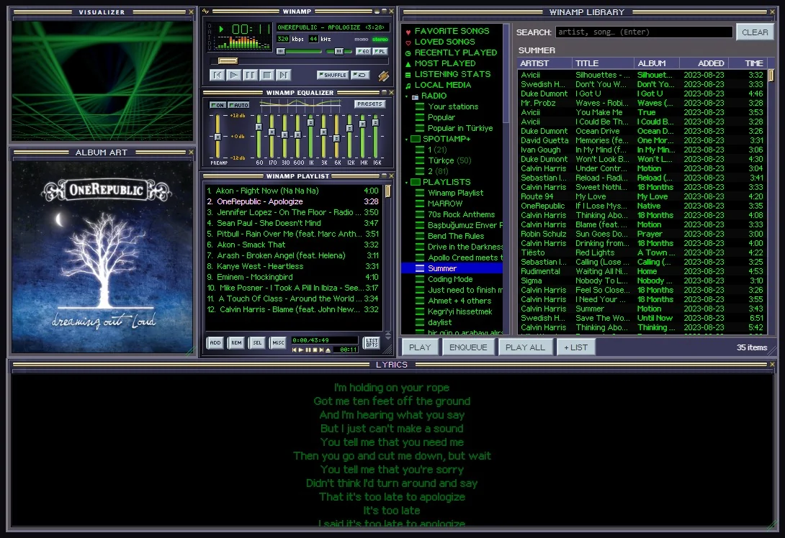

What you get
- Winamp's windows: the main window, the equalizer and the playlist, docking to each other, plus a Library, lyrics, album art and a visualizer.
- Real Winamp skins: eleven built in, thousands more from the Skin Museum, and any Winamp 2 skin (
.wsz) you have. - The keys: Z X C V B, arrows for volume and seeking, J to find a song, Ctrl+D for double size.
- MilkDrop: 534 real MilkDrop presets, full screen.
How it plays Spotify
With Spotify Premium, Spotiamp+ plays the music itself, through librespot, an open source Spotify library. That's why the equalizer, the visualizers and MilkDrop all get the sound. You log in on Spotify's own page; Spotiamp+ never sees your password.
A Free account gets Free Mode: Spotiamp+ becomes the Winamp face of the official Spotify app and drives it, play, pause, skip and seek.
Your own music and the radio too
Add your music folders once and every song is in the Library, next to your Spotify playlists. The Library's Radio finds thousands of internet radio stations, and Ctrl+L opens any stream link, like Winamp's Open location.
A bit of history
In 2013, as Winamp was shutting down, Spotify itself put out a small Winamp-style player called Spotiamp. It's long gone. Spotiamp+ grew out of Ted Steen's open source Spotiamp and goes much further.